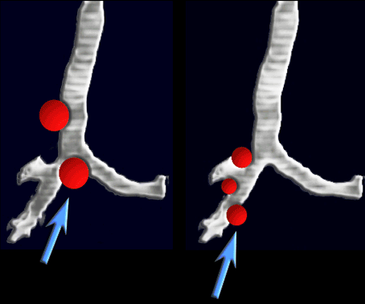
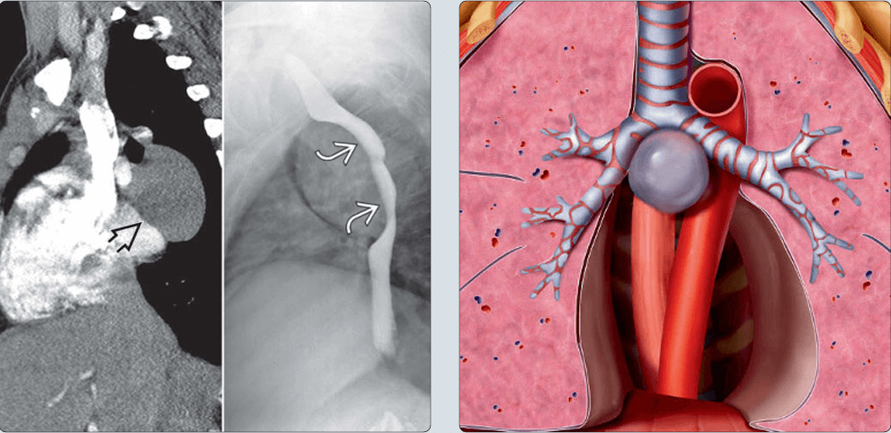

Nang Phế Quản
I. Đại cương
– Nang phế quản (bronchogenic cyst) là dị tật nang bẩm sinh của đường hô hấp, hình thành do chồi bất thường của cây khí-phế quản hoặc chồi phổi bụng trong quá trình phát triển phôi, khoảng ngày 26–40:
+ Thành nang thường được lót bởi biểu mô hô hấp; thành có thể chứa tuyến thanh nhầy, cơ trơn và sụn.
+ Chồi bất thường xuất hiện sớm thường tạo nang trung thất; xuất hiện muộn thường tạo nang trong nhu mô phổi.
+ Nang thường là túi kín, hiếm khi thông với phế quản.
– Dịch tễ:
+ Nang phế quản chiếm khoảng 50–60% các tổn thương nang trung thất và 10–15% các khối u trung thất.
+ Nang thường được phát hiện ở bệnh nhân dưới 35 tuổi; tỷ lệ nam:nữ khoảng 1:1.
– Vị trí:
+ Khoảng 65–90% nang trung thất được báo cáo ở trung thất giữa, thường dưới cựa khí quản; nang ở trung thất trước hiếm gặp.
+ Nang trong phổi chiếm khoảng 20–30% nang phế quản, thường gặp ở thùy dưới.
+ Hiếm khi nang xuất hiện ngoài lồng ngực, chẳng hạn ở thực quản, sau phúc mạc, màng ngoài tim hoặc xương ức; một số nang có thể kéo dài qua cơ hoành, tạo hình quả tạ.
– Kích thước: Đường kính thay đổi, thường trong khoảng 1,5–11 cm.
– Hình thái: Nang thường đơn độc, hình tròn hoặc bầu dục, đơn thùy, bờ nhẵn và ranh giới rõ.
– Lâm sàng:
+ Phần lớn bệnh nhân không có triệu chứng; nang thường được phát hiện tình cờ khi chụp X-quang hoặc CT ngực.
+ Nang lớn có thể gây triệu chứng do chèn ép đường thở, thực quản, tim hoặc mạch máu lớn.
+ Biến chứng gồm nhiễm trùng, xuất huyết, vỡ nang, thông với phế quản và tràn khí màng phổi; hiếm gặp hơn là rối loạn nhịp tim, hội chứng tĩnh mạch chủ trên hoặc thuyên tắc khí.

II. Giải phẫu
1. Phân chia trung thất
– Trung thất là khoang giải phẫu nằm giữa hai lá phổi, được giới hạn phía trước bởi mặt sau xương ức, phía sau bởi mặt trước cột sống và đầu sau xương sườn, hai bên là màng phổi trung thất, giới hạn trên là lỗ cổ ngực của lồng ngực, giới hạn dưới là phần giữa cơ hoành.
* Phân chia theo phẫu thuật (Thomas. W. Shields)
– Trung thất trước: giới hạn phía trước bởi xương ức và phía sau bởi các mạch máu lớn và màng ngoài tim.
– Trung thất giữa: giới hạn giữa trung thất trước và sau.
– Trung thất sau: được giới hạn phía trước bởi thành sau khí phế quản và mặt sau của màng ngoài tim, giới hạn phía sau bởi thân các đốt sống ngực.
– Ngoài tính theo mặt phẳng trên-dưới, trung thất được chia thành 3 tầng trên, giữa, dưới bởi 2 mặt phẳng ngang: mặt tiếp giáp với quai động mạch chủ và mặt đi qua chỗ phân đôi của khí quản.

© Chẩn Đoán Hình Ảnh Xray.vn
* Phân chia theo giải phẫu
– Trung thất trên: thuộc phần trên mặt phẳng đi ngang qua khe gian đốt sống ngực T4-T5 ở phía sau và góc giữa cán – thân xương ức ở phía trước.
– Trung thất trước: khoang nằm dưới mặt phẳng kể trên, giữa phía trước màng ngoài tim và mặt sau xương ức.
– Trung thất giữa: khoang chứa màng ngoài tim và tim.
– Trung thất sau: khoang nằm dưới mặt phẳng kể trên, sau màng ngoài tim và trước thân các đốt sống ngực.


* Phân chia ITMIG (International Thymic Malignancy Interest Group)


– Khoang trước mạch máu:
+ Giới hạn phía trước bởi xương ức và phía sau bởi các mạch máu lớn và màng ngoài tim.
+ Thành phần: tuyến ức, tổ chức mỡ, hạch bạch huyết, tĩnh mạch cánh tay đầu.
+ Bệnh lý thường gặp: bệnh lý tuyến ức, u tế bào mầm, lymphoma, di căn hạch, bướu giáp thòng.
– Khoang tạng:
+ Giới hạn phía trước là khoang trước mạch máu, giới hạn phía sau bởi đường thẳng về phía sau cột sống, cách bờ trước cột sống 1cm.
+ Thành phần: tim, tĩnh mạch chủ trên, động mạch chủ, động mạch phổi, ống ngực, khí phế quản, thực quản, hạch bạch huyết.
+ Bệnh lý thường gặp: bệnh lý tim và mạch máu lớn, bệnh lý khí quản, bệnh lý thực quản, nang đôi (nang màng tim, nang phế quản), bệnh lý hạch.
– Khoang cạnh cột sống:
+ Giới hạn phía trước bởi khoang tạng.
+ Thành phần: cột sống ngực, mô mềm cạnh cột sống.
+ Bệnh lý thường gặp: khối u nguồn gốc thần kinh, nhiễm trùng cột sống, chấn thương cột sống, tạo máu ngoài tủy.


2. Khối u trung thất

III. Chẩn đoán x-quang
* Khối thuộc trung thất giữa
– Đặc điểm hình ảnh: Nang phế quản trung thất thường biểu hiện bằng đám mờ đồng nhất, hình tròn hoặc bầu dục, bờ nhẵn, rõ, nằm sát khí-phế quản và thường dưới cựa khí quản:
+ Khối thường tạo góc tù với bờ trung thất; phim nghiêng có thể cho thấy khối nằm sau khí quản hoặc dưới cựa khí quản.
+ Tùy vị trí, khối có thể đẩy lệch cựa khí quản hoặc các phế quản trung tâm, làm rộng dải cạnh khí quản, hiện ở cửa sổ phế-chủ, làm mờ gốc động mạch dưới đòn trái, đẩy lệch rãnh đơn-thực quản bên phải hoặc gây rộng giả tạo dải cạnh cột sống trái.
+ Thường không thấy hình ảnh phế quản chứa khí trong nang. Nang có thể không hiện rõ trên X-quang, nhất là khi nằm ngay dưới cựa khí quản; X-quang chỉ gợi ý khối trung thất, không xác định chắc bản chất nang.
+ Khí hoặc mức khí-dịch trong khối gợi ý nhiễm trùng và/hoặc thông với đường thở.
– Nang trong phổi: Thường biểu hiện bằng đám mờ tròn hoặc bầu dục, bờ rõ, hay nằm ở 1/3 trong của thùy dưới; cần CT để xác định rõ vị trí và bản chất.
=> Case lâm sàng 1:
=> Case lâm sàng 2:
=> Case lâm sàng 3:
=> Case lâm sàng 4:
=> Case lâm sàng 5:
IV. Chẩn đoán CLVT
* Đặc điểm chung
– Cơ chế bệnh sinh: Nang phế quản hình thành do chồi bất thường của cây khí-phế quản tách khỏi đường dẫn khí trong quá trình phát triển phôi, sau đó không phát triển thành nhánh phế quản bình thường.
– Vị trí:
+ Nang có thể xuất hiện dọc theo cây khí-phế quản; nang trung thất thường ở gần cựa khí quản hoặc cạnh khí quản phải.
+ Nang trong nhu mô phổi chiếm khoảng 20–30% nang phế quản.
– Đặc điểm hình ảnh:
+ Nang thường đơn độc, hình tròn hoặc bầu dục, bờ rõ, thành mỏng và thường đồng nhất.
+ Tỷ trọng thường tương tự dịch, khoảng 0–20 HU; tuy nhiên, khoảng 40% được báo cáo có tỷ trọng trên 30 HU, thường do dịch giàu chất nhầy/protein, sản phẩm máu hoặc tinh thể canxi oxalat. Tỷ trọng cao không loại trừ nang phế quản.
+ Thành nang có thể vôi hóa (khoảng 10%) và ngấm thuốc dạng viền mảnh; thông thường không có ngấm thuốc trong lòng nang.
+ Nang thường không thông với đường thở. Khi nhiễm trùng hoặc có đường thông với phế quản, nang có thể chứa khí hoặc mức khí-dịch, thành dày và ngấm thuốc không đều.

* Nang trong phổi
– Đặc điểm hình ảnh: Nang thường đơn độc, hình tròn hoặc bầu dục, đơn thùy, bờ nhẵn và rõ:
+ Tỷ trọng được báo cáo trong khoảng 9–40 HU, nhưng có thể thay đổi theo thành phần dịch trong nang.
+ Nang thường nằm gần rốn phổi hoặc ở thùy dưới, ưu thế ở 1/3 trong; vị trí này không tuyệt đối và nang có thể xuất hiện ở thùy khác.
+ Đường kính thường được báo cáo khoảng 3–5 cm.
* Nang trung thất
– Vị trí: Nang thường nằm dưới cựa khí quản (khoảng 50%) hoặc cạnh khí quản (khoảng 20%); các vị trí khác gồm rốn phổi và cạnh tim (khoảng 30%). Tỷ lệ thay đổi giữa các loạt ca.
– Đặc điểm hình ảnh: Nang có thể áp sát hoặc có cuống liên quan với khí quản, phế quản chính; cuống không phải lúc nào cũng thấy rõ trên CT.
– Biến chứng:
+ Nang lớn có thể chèn ép hoặc đẩy lệch phế quản, thực quản, tim hay mạch máu lớn.
+ Chèn ép phế quản đáng kể có thể gây hẹp đường thở, xẹp phổi hoặc đông đặc do viêm phổi tắc nghẽn; các biểu hiện này không thường gặp.
=> Case lâm sàng 1:

=> Case lâm sàng 2:

=> Case lâm sàng 3:


=> Case lâm sàng 4:
=> Case lâm sàng 5:
* Biến chứng
– Nhiễm trùng nang có thể gây viêm quanh nang:
+ Đường thông với cây phế quản có thể hình thành, làm nang chứa khí hoặc mức khí-dịch.
+ Trên CT, thành nang có thể dày và ngấm thuốc không đều.
=> Case lâm sàng 1:
=> Case lâm sàng 2:


V. Phân biệt
* Nang thực quản đôi
– Nang thực quản đôi (esophageal duplication cyst) là dị tật nang bẩm sinh hiếm, nằm sát hoặc trong thành thực quản.
– Dịch tễ: Chiếm khoảng 0,5–2,5% các khối u thực quản.
– Vị trí:
+ Thường nằm ở trung thất sau, dọc theo thực quản; đa số ở 1/3 dưới, phần còn lại ở 1/3 trên hoặc giữa.
+ Nang thường có chung thành cơ với thực quản; khoảng 80% không thông với lòng thực quản, nhưng thể dạng ống có thể thông.
– Lâm sàng:
+ Nhiều nang không có triệu chứng và được phát hiện tình cờ ở người lớn; triệu chứng thường do chèn ép và phụ thuộc vị trí nang.
+ Nang ở thực quản trên có thể gây ho, thở rít hoặc khó thở; nang ở 1/3 dưới có thể gây nuốt khó hoặc ứ thức ăn. Đau ngực cũng có thể gặp.
+ Hiếm khi xảy ra chảy máu, rối loạn nhịp tim hoặc vỡ nang gây viêm trung thất.
– Đặc điểm X-quang:
+ Có thể thấy khối mờ mô mềm bờ rõ sát thực quản hoặc trung thất rộng; đôi khi khó nhận biết do chồng lấp các cấu trúc trung thất.
+ Trên phim nghiêng, nang lớn có thể gây hiệu ứng khối hoặc đè lõm thành sau khí quản.
– Đặc điểm CLVT:
+ Thường là khối dạng nang bờ nhẵn, sát hoặc nằm trong thành thực quản, tỷ trọng thấp, khoảng 8–12 HU khi chứa dịch đơn giản.
+ Dịch giàu protein hoặc xuất huyết có thể làm tăng tỷ trọng; thành nang thường trơn, nhưng độ dày và mức ngấm thuốc có thể thay đổi.
– Phân biệt: So với nang phế quản (bronchogenic cyst), nang thực quản đôi thường nằm trong hoặc sát thành thực quản, hay ở 1/3 dưới và có chung thành cơ với thực quản, trong khi nang phế quản thường liên quan khí-phế quản và hay ở quanh cựa khí quản; hai loại có thể chồng lấp về hình ảnh nang và tỷ trọng trên CT, nên chụp thực quản cản quang hoặc siêu âm nội soi (EUS) có thể giúp xác định mối liên quan với thành thực quản và cấu trúc nhiều lớp của thành nang.

=> Case lâm sàng 1:

=> Case lâm sàng 2:

=> Case lâm sàng 3:


* Nang màng ngoài tim
– Nang màng ngoài tim (pericardial cyst) là tổn thương nang lành tính, thường chứa dịch.
– Vị trí:
+ Thường nằm ở góc tâm-hoành phải (khoảng 65%), góc tâm-hoành trái (khoảng 25%); khoảng 10% còn lại ở rốn phổi hoặc trung thất, thường là trung thất giữa.
+ Hiếm khi nang có thông với khoang màng ngoài tim.
– Kích thước: Đường kính thường khoảng 3–8 cm.
– Đặc điểm hình ảnh: Nang thường hình tròn, bầu dục hoặc tam giác, bờ rõ, chứa dịch đồng nhất, tỷ trọng thấp và không tăng quang trong lòng.
– Phân biệt: Nang màng ngoài tim thường nằm ở góc tâm-hoành, nhất là bên phải, trong khi nang phế quản (bronchogenic cyst) thường gần cựa khí quản hoặc các đường dẫn khí lớn; tuy nhiên, đặc điểm dịch và bờ nang có thể chồng lấp, và nang phế quản đôi khi nằm ở vị trí cạnh tim, nên vị trí cùng mối liên quan với màng ngoài tim hoặc khí-phế quản có giá trị hơn tỷ trọng dịch đơn thuần.
=> Case lâm sàng 1:

=> Case lâm sàng 2:


* Nang giả tụy trung thất
– Nang giả tụy trung thất (mediastinal pancreatic pseudocyst) là biến chứng hiếm của viêm tụy cấp hoặc mạn.
– Cơ chế bệnh sinh:
+ Ổ dịch tụy được bao bọc bởi thành xơ, không có lớp biểu mô.
+ Dịch tụy có thể lan từ quanh tụy lên trung thất sau qua khe thực quản hoặc khe động mạch chủ.
– Lâm sàng: Tiền sử viêm tụy là đầu mối quan trọng; nang lớn có thể gây đau thượng vị, khó thở, nuốt khó hoặc đau sau xương ức do chèn ép.
– Đặc điểm hình ảnh:
+ CT có thể thấy khối dạng nang, thành xơ ngấm thuốc dạng viền, không tăng quang trong phần dịch.
+ Dấu gợi ý quan trọng là sự liên tục của ổ dịch từ quanh tụy lên trung thất sau qua khe hoành.
– Phân biệt: Nang giả tụy trung thất thường có tiền sử viêm tụy và liên tục với ổ dịch quanh tụy qua khe hoành, trong khi nang phế quản (bronchogenic cyst) thường liên quan khí-phế quản và hay nằm quanh cựa khí quản; hai loại có thể cùng biểu hiện thành khối nang trung thất, nên cần chú ý mối liên hệ với tụy và đường lan qua khe hoành.

* Nang thần kinh ruột
– Nang thần kinh ruột (neurenteric cyst) là dị tật bẩm sinh hiếm, liên quan đến sự phân chia bất thường giữa mảng dây sống và nội bì trong quá trình phát triển phôi:
+ Sự tồn tại bất thường của ống thần kinh-ruột có thể để lại mô nội bì lạc chỗ cạnh trục thần kinh, từ đó hình thành nang.
+ Nang có thể đi kèm khuyết tật đường giữa thân đốt sống và liên tục với ống sống hoặc màng tủy; không phải trường hợp nào cũng có các dấu hiệu này.
– Vị trí và dịch tễ:
+ Nang trung thất thường nằm cạnh cột sống ở trung thất sau, hay gặp ở vùng cổ thấp và ngực; thường đơn độc, nhẵn và một thùy.
+ Nang thần kinh ruột chiếm khoảng 0,7–1,3% các u của trục tủy sống; trong nhóm nang thần kinh ruột ở cột sống, khoảng 90% nằm dưới màng cứng, ngoài tủy, thường ở phía bụng hoặc bụng-bên của tủy sống.
– Bất thường xương: Có thể kèm dị dạng nửa thân đốt sống, đốt sống bướm hoặc nứt đốt sống.
– Đặc điểm hình ảnh:
+ CT giúp xác định vị trí cạnh cột sống và các bất thường xương, khuyết thân đốt sống.
+ MRI có giá trị đánh giá sự lan vào ống sống và mối liên quan với tủy sống, màng tủy. Tín hiệu thường đồng hoặc gần đồng tín hiệu với dịch não tủy trên T1 và tăng tín hiệu trên T2, nhưng có thể thay đổi theo thành phần dịch.
+ Dịch trong nang có thể giống dịch não tủy hoặc có màu trắng sữa, kem, vàng hay vàng xanthochromic.
– Phân biệt: Nang thần kinh ruột thường nằm cạnh cột sống vùng cổ thấp-ngực và có thể đi kèm bất thường thân đốt sống hoặc liên tục với ống sống; nang phế quản (bronchogenic cyst) thường liên quan khí-phế quản, hay ở quanh cựa khí quản và không có liên hệ với ống sống. Hai loại có thể cùng biểu hiện thành khối nang trung thất; vị trí, bất thường xương và MRI giúp phân biệt.

* Nang tuyến ức
– Nang tuyến ức (Thymic cyst) là tổn thương nang hiếm ở khoang trước mạch máu, chiếm khoảng 3% các khối trung thất trước theo một tổng quan hình ảnh.
– Nguồn gốc và hình thái:
+ Có thể bẩm sinh hoặc mắc phải; nang bẩm sinh ít gặp hơn. Nang mắc phải thường liên quan viêm hoặc xuất huyết, và có thể gặp cùng bệnh Hodgkin, sau phẫu thuật hoặc xạ trị.
+ Nang bẩm sinh thường đơn thùy, thành mỏng khó nhận thấy và chứa dịch trong. Nang mắc phải thường nhiều thùy hoặc nhiều vách, thành có thể dày hơn do viêm hay xuất huyết.
– Lâm sàng: Phần lớn không triệu chứng. Nang lớn có thể gây triệu chứng chèn ép như ho, khó thở hoặc nuốt khó; khàn tiếng hay liệt dây thanh âm là biểu hiện hiếm.
– Đặc điểm hình ảnh:
+ Trên CT, thường là tổn thương hình bầu dục hoặc tròn, bờ rõ, ở khoang trước mạch máu. Tỷ trọng thường thấp nhưng có thể cao hơn tỷ trọng nước do dịch giàu protein hoặc xuất huyết; đôi khi thành nang vôi hóa.
+ MRI giúp phân biệt nang giàu protein hoặc xuất huyết với khối đặc, đồng thời đánh giá vách và thành phần đặc ngấm thuốc. Nang đơn giản thường giảm tín hiệu T1, tăng tín hiệu T2 và không ngấm thuốc trong lòng.
+ Nang lớn đôi khi lan qua lỗ ngực trên, tạo khối cổ-trung thất hình quả tạ.
– Phân biệt: Nang tuyến ức thường nằm ở khoang trước mạch máu, liên quan vị trí tuyến ức; nang phế quản (bronchogenic cyst) thường liên quan khí-phế quản và hay ở quanh cựa khí quản. Tỷ trọng dịch trên CT có thể chồng lấp, nên vị trí và MRI giúp phân biệt tốt hơn.


* U quái lành tính
* U quái trưởng thành (mature teratoma)
– U quái trưởng thành thường nằm ở khoang trước mạch máu của trung thất. Khối thường giới hạn rõ, hình tròn hoặc thùy múi, gây đè đẩy cấu trúc lân cận. Mặt phẳng mỡ quanh khối còn bảo tồn trên CT ủng hộ không có xâm lấn đại thể, nhưng không chứng minh khối có vỏ bao hoàn chỉnh hoặc loại trừ hoàn toàn thành phần ác tính.
– Đặc điểm trên CT đa dãy (MDCT): Khối thường không đồng nhất, có thể gồm mô mềm, dịch, mỡ và vôi hóa:
+ Trong một loạt 66 ca, mô mềm gặp ở 100%, dịch ở 88%, mỡ ở 76% và vôi hóa ở 53%; đây là tỷ lệ của riêng loạt bệnh đó, không phải tần suất cố định.
+ Thành phần dạng nang có thể một hoặc nhiều ngăn; thành và vách có thể ngấm thuốc. Độ dày thành thay đổi, không nên áp dụng một khoảng số cố định.
+ Mỡ đại thể thường có tỷ trọng âm, khoảng −40 đến −120 HU. Mức dịch-mỡ gặp khoảng 11% trong loạt bệnh trên; đây là dấu hiệu rất gợi ý nhưng không thường gặp, và không có dấu hiệu này không loại trừ u quái.
+ Vôi hóa có thể thô, dạng viền hoặc dạng răng, xương. Mô mềm có thể ngấm thuốc; riêng sự hiện diện hay ngấm thuốc của mô mềm không đủ xác định bản chất ác tính.
– Phân biệt: U quái trưởng thành thường ở khoang trước mạch máu và có thể chứa mỡ, dịch cùng vôi hóa; nang phế quản (bronchogenic cyst) thường liên quan khí-phế quản, hay nằm quanh cựa khí quản. Tỷ trọng dịch đơn thuần có thể chồng lấp, nhưng phối hợp mỡ đại thể và vôi hóa trong khối hỗn hợp gợi ý u quái hơn.


VI. Tiên lượng & Điều trị
* Tiên lượng
– Nang phế quản là tổn thương lành tính; nhiều nang không triệu chứng. Nang không được điều trị có thể tăng kích thước hoặc gây chèn ép, nhiễm trùng, xuất huyết hay vỡ; biến chứng nặng hiếm gặp.
– Sau cắt bỏ hoàn toàn, tiên lượng thường tốt và tái phát hiếm. Cắt không hết thành nang có thể dẫn đến tái tích tụ dịch hoặc tái phát. Chuyển dạng ác tính đã được báo cáo nhưng rất hiếm, không nên xem là nguy cơ thường gặp.
* Điều trị
– Lựa chọn xử trí dựa trên triệu chứng, kích thước và vị trí nang, dấu hiệu biến chứng, mức độ chắc chắn của chẩn đoán, nguy cơ phẫu thuật và nguyện vọng người bệnh; nên hội chẩn ngoại lồng ngực khi cần.
– Phẫu thuật thường được khuyến nghị với nang có triệu chứng, gây chèn ép, lớn lên, nhiễm trùng hoặc có hình ảnh chưa điển hình khiến chưa loại trừ được tổn thương khác. Với nang có triệu chứng cấp tính, cần ổn định hô hấp-tuần hoàn và xử trí nhiễm trùng trước hoặc đồng thời với kế hoạch điều trị triệt để.
– Với nang tình cờ phát hiện, không triệu chứng và có hình ảnh điển hình, quyết định giữa cắt bỏ chương trình và theo dõi cần cá thể hóa. Cân nhắc tuổi, bệnh đồng mắc, vị trí nang, khả năng theo dõi và mức độ chắc chắn của chẩn đoán; chưa có lịch theo dõi hình ảnh thống nhất cho mọi trường hợp.
– Cắt bỏ hoàn toàn thành nang là mục tiêu điều trị để hạn chế tái phát, đồng thời bảo tồn khí-phế quản, thực quản và mạch máu lân cận. Phẫu thuật nội soi lồng ngực có hỗ trợ video hoặc robot được ưu tiên khi phù hợp; mổ mở có thể cần thiết với nang phức tạp, dính nhiều hoặc không thể cắt an toàn bằng phương pháp ít xâm lấn. Nếu thành nang dính chặt vào cấu trúc quan trọng, ưu tiên tránh tổn thương; xử trí phần thành còn lại và theo dõi do nguy cơ tái phát.
– Với nang trong nhu mô phổi, cân nhắc phẫu thuật bảo tồn nhu mô như cắt hình chêm hoặc cắt phân thùy khi khả thi; cắt thùy phổi dành cho trường hợp nhu mô tổn thương rộng, nhiễm trùng tái diễn hoặc không thể xử trí bằng phương pháp bảo tồn hơn.
– Dẫn lưu qua nội soi phế quản siêu âm (EBUS) hoặc chọc hút chỉ dành cho một số tình huống chọn lọc, như cần giảm chèn ép tạm thời hoặc người bệnh không thể phẫu thuật. Đây thường không phải điều trị triệt để vì có nguy cơ nhiễm trùng và tái tích tụ dịch; không nên chọc hút thường quy một nang nghi nang phế quản.
– Sau phẫu thuật, đối chiếu kết quả giải phẫu bệnh với hình ảnh. Theo dõi lâm sàng và hình ảnh được cá thể hóa, nhất là khi không cắt hết thành nang hoặc có dấu hiệu tái phát. Nếu chọn theo dõi không phẫu thuật, cần lập kế hoạch đánh giá định kỳ riêng cho người bệnh; chưa có khoảng thời gian theo dõi chuẩn áp dụng cho tất cả.
Tài liệu tham khảo
* Bronchogenic Cyst: Imaging Features with Clinical and Histopathologic Correlation – H. Page McAdams, MD, Wanda M. Kirejczyk, MD2
* Imaging of Cystic Masses of the Mediastinum – Mi-Young Jeung, MD, Bernard Gasser, MD
* Bronchopulmonary foregut malformations presenting as mass lesions in children – M. Kocaoglu, D. P. Frush, M. S. Ugurel
* Cystic Mediastinal Lesions: A Pictorial Review – S. Loutfi, M. AL HOURI, E. K. Omar, S. Al Rajhi, S. Al Ghanem; Riyadh/SA
* Retroperitoneal bronchogenic cyst: CT and MR imaging – R. Murakami, M. Machida, Y. Kobayashi, J. Ogura, T. Ichikawa & T. Kumazaki
* Pleural bronchogenic cysts: imaging findings – Motoo Nakagawa, Masaki Hara, Hidekazu Oshima, Yuta Shibamoto, Youko Sato, Satoshi Kondo, Tatsuya Suzuki, Satoru Takahashi
* Intrapulmonary bronchogenic cyst: CT and pathologic findings in five adult patients – Young Cheol Yoon, Kyung Soo Lee, Tae Sung Kim, Jhingook Kim, Young Mog Shim, Joungho Han
* Intradiaphragmatic Bronchogenic Cysts – Ronnie Mubang, John Joseph Brady
* Mediastinal Masses in Children – Shashi H. Ranganath, Edward Y. Lee, Ricardo Restrepo